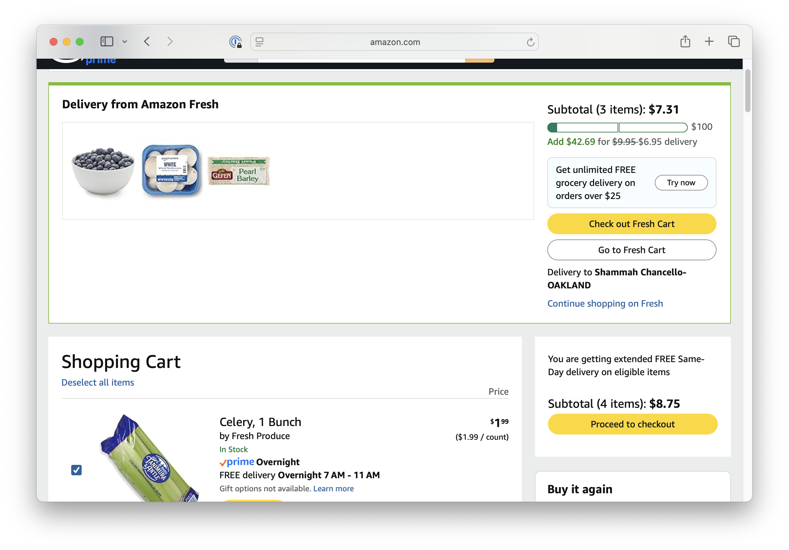

I wanted blueberries and mushrooms. That’s it. I didn’t want to think about checkout flows.
Amazon patented one-click checkout. Then they unsolved it. I clicked the cart icon, one icon showing seven items, and found two carts. Two checkout flows. Two delivery minimums, tracked separately.
All of it: Amazon. Same address, same company; two checkouts anyway, because they built grocery separately, bought Whole Foods separately, never connected them. Conway’s Law: your product reflects your org chart. Their internal problem became your checkout.
Amazon’s genius is that complexity disappears on the customer’s end. My friend Joel is from Alaska; he says blueberries grow wild there if you know where to hike. They just appear in my cart. That’s what we’re paying for.
I just wanted blueberries. Now I’m a logistics coordinator.
One cart. Put things in it; Amazon routes them however they need to. The routing is Amazon’s domain; they are world-class at it. A blueberry and a handful of mushrooms going to the same Oakland address is not a hard problem for the company that patented one-click checkout. The fix isn’t in the warehouse. It’s in the cart.
Just one cart.
I’m an engineer who thinks like a product manager. I spotted this because I build things; what I’m looking at here is a seam where two systems that should be one aren’t. Seams like this don’t fix themselves. Someone has to own the problem across org boundaries, which is exactly the kind of thing I do.
If you’re Jeff Bezos, or anyone at Amazon who thinks this is worth fixing, let’s talk.
Read and subscribe on Substack